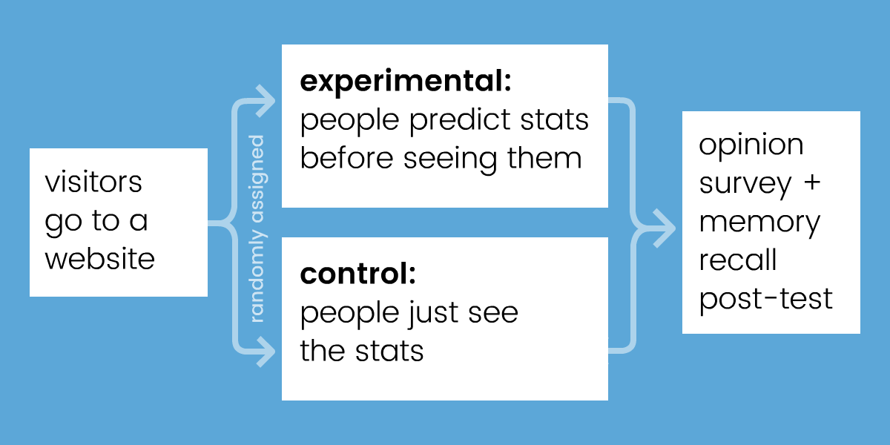
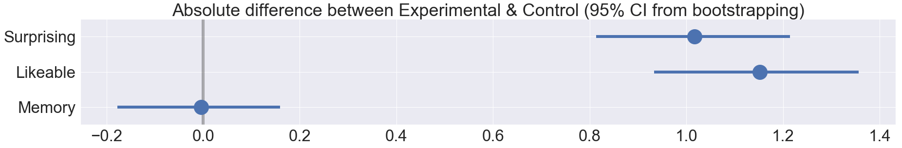
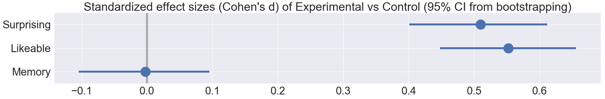

Every day, we're bombarded with statistics on economics, politics, science, etc. But too often, numbers go in one eye and out the other. So the question is:
How do you make statistics more sticky?
Take a wild guess on these three stats:
This guessing game was part of a randomized controlled web-experiment I did earlier this month. Inspired by New York Times' You Draw It, I wanted to see if predicting a statistic before seeing it makes it more memorable.
Here was my experimental design:

Both groups see 10 statistics about the world, in random order. Why 10? Because I wanted to overload short-term memory, which cognitive scientists have estimated can only hold 7±2 "chunks". 1 (Or is it 4±1? 2 )
Previous studies have already shown that confronting your misconceptions helps you learn better, whether that's directly 3 or indirectly through prediction. 4 5 So, when I "pre-registered" my experiment, I hypothesized that "predict it first" should create a small increase in memory retention.
But when I analyzed the data (N=1620 responses), to my great surprise...
Well... what do you predict happened?
That's right: null result.
So after performing the scientific protocol of "moping around for a few days", I embraced the null. Because, this null was puzzling. People in the experimental "predict it first" group reported liking the content more (d=0.55, p<0.001), and reported being surprised more (d=0.51, p<0.001)... yet that still wasn't sufficient for helping people actually remember more.


Therefore, my experiment (with its null result) must have had something different from all the previous "confront your misconceptions first" experiments (with their positive results).
I think the big difference was this: all the other studies taught & tested people on ONE topic. Whether that's quantum mechanics, voter demographics, smartphone prices – they showed information on a single topic, and never mixed topics.
In contrast, my experiment showed 10 different stats in 10 different topics in five minutes. I think I got exactly what I wished for: I overloaded short-term memory. If "predict it first" had any effect, it would have been wiped out by the sheer cognitive load of trying to hold 10 unrelated facts in one's head.
In hindsight, that sounds like an obvious mistake, but "cram lots of ideas in a short time" is what a lot of online educational content does. Top 10 Lists, lightning-pace YouTube videos, etc. My null result implies a hard lesson for "educational content" makers: no matter how interesting or surprising you make your content, if you go against basic cognitive science principles, it'll all be for naught.
I've been making "interactive explainers" for years. I think it'd be good for me to keep doing these (admittedly amateur) cognitive science experiments. Practice without theory can get lost down a blind alley, theory without practice can get lost in the clouds. 7 Maybe by doing both, I can help the two fields learn from each other.
That's my hypothesis, anyway.
It's time to test that.
Massive thanks to my supporters on Patreon for helping me do SCIENCE! See supporters' names & stick figures
Also huge thanks to these folks for giving design/science advice: Srini Kadamati, Jessica Hullman, Amit Patel, John Austin, Toph Tucker, B Cavello, Joshua Horowitz
Play the experiment: randomized · control · experimental
My data: raw (zip) · cleaned (csv)
My data-cleaning code: jupyter notebook · html export
My data-analysis code: jupyter notebook · html export
Experiment source code: github
Feetnotes:
Miller, G. A. (1956). The magical number seven, plus or minus two: Some limits on our capacity for processing information. Psychological review, 63(2), 81. ↩
Cowan, N. (2010). The magical mystery four: How is working memory capacity limited, and why? Current directions in psychological science, 19(1), 51-57. ↩
Muller, D. A., Bewes, J., Sharma, M. D., & Reimann, P. (2008). Saying the wrong thing: Improving learning with multimedia by including misconceptions. Journal of Computer Assisted Learning, 24(2), 144-155. ↩
Crouch, C., Fagen, A. P., Callan, J. P., & Mazur, E. (2004). Classroom demonstrations: Learning tools or entertainment? American journal of physics, 72(6), 835-838. ↩
Kim, Y. S., Reinecke, K., & Hullman, J. (2017, May). Explaining the gap: Visualizing one's predictions improves recall and comprehension of data. In Proceedings of the 2017 CHI Conference on Human Factors in Computing Systems (pp. 1375-1386). ACM. ↩
SadTrombone.wav by Benboncan, CC-BY ↩
For more on bridging "basic" and "applied" research, see:
Pasteur's Quadrant
Also see this paper by Duncan Watts:
“Should social science be more solution-oriented?”
↩